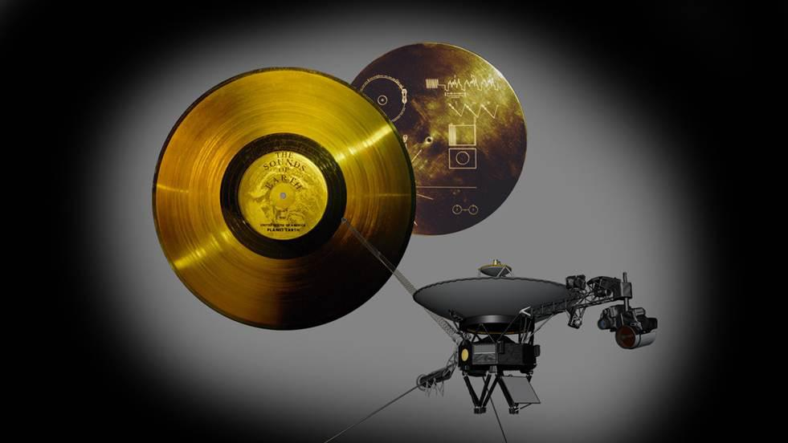

Briefing Room
← Mission controlMoonbase Mission Control in one minute
Every choice has a cost. Our game shows you why. Players design and fly a complete space mission in three linked parts: 1. Orbit (place a relay satellite), 2. Rover (land and dig or sample), 3. Comms (send the science home). Each mission’s result is the next one’s starting point, so decisions ripple through the whole campaign, just like on a real mission.
Who is it for?
Students from about age 12 to first-year university, their teachers, and science clubs. It runs free in any modern browser: no install, no account. Up to four players share a crew, each with a role (mission lead, engineer, scientist, comms officer). Class mode shortens every mission so a full campaign fits in one lesson.
How does it answer the challenge?
| The challenge asks for | Where it is in the game |
|---|---|
| Define an objective and requirements | Every mission starts with a briefing and a goal; the rover has three difficulty levels per world. |
| Design a spacecraft and choose instruments | Mission 1: rocket, antenna, solar wings. Mission 2: seven rover parts, including a neutron spectrometer, drills and an RTG. |
| Choose a launch vehicle and an orbit, check compatibility | Mission 1: three launchers with payload limits that shrink for farther worlds; orbit sliders and real-mission presets; a test campaign blocks a launch that is too heavy, over budget, under-powered or too low. |
| Manage budget, mass, power, communications, data and lifetime | Live meters in every mission; battery, sunlight and link status during deploy; data volume and contact time in Mission 3. |
| Consequences for every decision; no single perfect answer | Every part shows its mass, cost and power change. Automated tests show different designs can each win, and bad ones really fail. |
| Simulation, evaluation and feedback on why | 3D simulations, random events, and a debrief with a score, the reasons, badges and “Why it went this way” lessons. |
| Team play for up to four | A crew of up to four profiles; roles label each design decision; everyone earns XP. (Shared screen, not online.) |
| Difficulty levels, scenarios, random events, dashboards, reports, leaderboards | Easy/Medium/Hard; Moon, Mars, Mercury, Ceres and Vesta; dust, stuck wheels, solar flares and more; HUDs; debriefs; profiles with medals and history. |
Where does NASA data do real work?
| Mission | NASA data or resource | What it decides |
|---|---|---|
| 1 Orbit | Planet masses (GM) and radii from NASA/JPL; real orbits of LRO, Gateway (NRHO), MRO, MAVEN, MESSENGER and Dawn as presets | Orbit period, speed, braking burn, fuel and contact time with the base, computed with Kepler’s laws. Our model gives LRO a 113-minute orbit (real: about 2 hours) and MRO 112.8 minutes (real: 112). |
| 2 Rover (Moon) | LRO LOLA laser-altimeter slope and elevation of Shackleton crater’s rim, via NASA Moon Trek | Where a lander may touch down, where each rover can drive, how long each move takes. Shackleton’s walls are steeper than 20°, so no wheeled rover can reach the icy floor: players must engineer a tether or a walker. |
| 2 Rover (Mars) | MGS MOLA + Mars Express HRSC relief and MRO CTX images of Jezero crater, via NASA Mars Trek | The map, the river delta, rim and floor sample sites, and routes. Heights are read from a colour map, so they are approximate and labelled as such. |
| 3 Comms | Signal delay from real Earth distances; NASA’s Deep Space Network stations | How long messages take and which station is listening. |
| All | NASA global maps: LRO WAC and LOLA elevation (Moon), Viking and MOLA elevation (Mars), MESSENGER (Mercury), Dawn (Ceres and Vesta) | The 3D globes, with a switch between imagery and elevation for the Moon and Mars. |
| All | NASA 3D Resources (github.com/nasa/NASA-3D-Resources): Satellite Kit, Saturn V, Atlas, Jupiter-C, LRO, MRO, MESSENGER, Dawn, TDRS, Perseverance, Opportunity, RASSOR, Apollo Lunar Module, Viking Lander, Deep Space Network dishes | The models shown when you configure the spacecraft, pick hardware and plan the link. Shown for illustration; the game’s numbers are simplified. |
How accurate is it?
Real data: lunar terrain, slopes and heights (LOLA, averaged to 333 m squares); planet constants; orbit physics (two-body Kepler orbits and the rocket equation, the same first step NASA’s GMAT tool starts from). Game models, labelled in the game: sunlight at the lunar pole, ice amounts (guided by LCROSS’s 5.6% water measurement), cold-trap locations, Earth visibility, Mars heights, noise levels and part costs. They are simplified so a student can reason about them, not to plan a real mission.
How do we know it works?
- Over 70 automated tests run on every change (GitHub Actions): orbit physics against real missions, terrain rules, design limits, the parity code and the hand-offs between missions. A robot player wins all three Moon objectives and the hardest Mars objective with sensible rovers, while badly designed rovers really fail.
- Playtest: a teacher tested an earlier version. His suggestions shaped this one: three connected missions, player profiles, class mode, and clearer feedback.
- Data checked twice: the terrain was sampled in two independent ways and matched exactly.
Privacy, safety and accessibility
No accounts, no tracking, no data leaves the device: profiles and scores live in the browser’s local storage. The one optional exception is the AI-worded analyst, which is off by default: if a teacher turns it on, the game sends only mission numbers (never names or profiles) to our own server to have a forecast explained in plain words. Every number in a forecast is still computed by the game’s own code. Everything is keyboard-playable (press ? for shortcuts), colours always come with words, motion respects “reduce motion”, and the 3D rover view has a 2D map alternative. The 3D library loads from a public CDN; the rest works offline.
What’s next?
Classroom trials with more teachers; NASA’s measured lunar illumination maps to replace our sunlight model; online team play; more worlds for the rover.
A ready-to-use 45-minute lesson
Learning goals
- Engineering trade-offs: every gain in one resource (science, speed) costs another (mass, power, money, time).
- Physics: Kepler’s laws (satellites move slowest at their highest point), the rocket equation, energy budgets with solar and nuclear power.
- Earth and space science: why ice survives in permanently shadowed craters; day and night on the Moon and Mars; how slopes limit rovers.
- Computing: binary, bits and bytes, compression, and error detection with parity bits.
- Decision making and teamwork: agreeing on a design under constraints, then learning from the outcome.
Plan
| Time | What happens |
|---|---|
| 0–8 min | Hook: show the hub and ask “Every choice has a cost: what could a heavier antenna cost you?” Turn on class mode and create one profile per student or team. |
| 8–16 min | Mission 1, Orbit, in crews of 2–4. Challenge: reach the contact goal with the cheapest design. |
| 16–30 min | Mission 2, Rover. Each crew agrees on a rover before launch (roles label who owns which part). |
| 30–37 min | Mission 3, Comms: compression or parity? Decode Earth’s reply. |
| 37–45 min | Debrief: crews compare medals and “Why it went this way”; discuss the questions below. |
Discussion questions
- Why can’t a wheeled rover drive into Shackleton crater? What did your crew do instead?
- Your relay satellite spends more time over the base when its highest point is above it. Why?
- Why do Curiosity and Perseverance use a nuclear RTG instead of solar panels?
- Parity adds bits but catches errors. When is that worth it?
- Which decision would you change first if you flew again, and why?
Moonbase Mission Control · Worksheet
Name / crew:
1. Orbit
Our orbit: lowest point ____ km, highest point ____ km, above the ____ pole. Contact with the base: ____ %.
One thing that made the satellite heavier, and why it mattered:
2. Rover
Our power choice: ________ Why?
The biggest surprise during the mission, and what we decided:
3. Comms
We chose ______ compression and ______ error check. Earth’s command was: ________
Write your initial as 5 bits (A = 00001): ___________
Reflection
“Every choice has a cost.” Give one example from your mission:
Data and credits
NASA data
- Moon terrain: LRO LOLA south-pole slope and elevation products (87.5°S, 5 m/px) and the Site04 Shackleton Rim hillshade, NASA Moon Trek.
- Mars terrain: MGS MOLA + Mars Express HRSC colour hillshade (200 m/px) and MRO CTX Jezero mosaic, NASA Mars Trek.
- Globes: LRO WAC global mosaic, Viking MDIM 2.1 colour mosaic, MESSENGER MDIS enhanced-colour mosaic, Dawn FC colour-shaded mosaic, NASA Solar System Treks.
- Planet constants (GM, radius, day length) from NASA/JPL planetary data; mission facts from NASA mission pages (LRO, LCROSS, VIPER, RASSOR, Perseverance, Ingenuity, MRO, MAVEN, MESSENGER, Dawn, Gateway, Deep Space Network).
- Challenge resources used for the design: NASA “Design and Develop Science Missions”, JPL Concept Maturity Levels, NASA GSFC Mission Design Lab study stages, NASA GMAT.
Where each source sits in the NASA Open Data Portal
We checked every source against the catalog at data.nasa.gov. The portal lists these missions’ archives as metadata and points to the Planetary Data System or the original host for the files themselves, so the pictures and terrain in the game come through NASA’s Trek services. Licences are shown as the catalog states them; NASA’s media usage guidelines apply to every image.
Music and sound

Our soundtrack is inspired by the Voyager Golden Record. The music on the record itself is still under copyright, so we did not use it. Instead the game plays an original ambient score generated live in your browser (Web Audio), with slow chords, star-like chimes and a soft “solar wind” hiss. Turn it on or off with Music in the top bar.
- “The Eagle has landed” (Apollo 11, 1969) plays when your rover lands. Source: nasa.gov audio collection, public domain.
- “One small step for man” (Apollo 11, 1969) plays when the full campaign succeeds. Source: nasa.gov audio collection, public domain.
- Sputnik 1 radio beeps (1957) play when the downlink starts. Source: nasa.gov audio collection.
Software
three.js r170 (MIT licence) via the jsDelivr CDN. Fonts: Orbitron, Rajdhani and Share Tech Mono (SIL Open Font Licence) from Google Fonts. All other code, the cat illustrations, the music and the sound effects (generated in the browser) are the team’s own.
Team Cat on Moon
Jeongha, David and Emad, NASA Space Apps Challenge 2026, Budapest. The idea came from a brainstorm by the three of us. Mission 3’s signal-encoding game is based on Jeongha’s design.
Some code was written with the help of an AI coding assistant, as allowed by the Space Apps rules; the idea and design are the team’s.